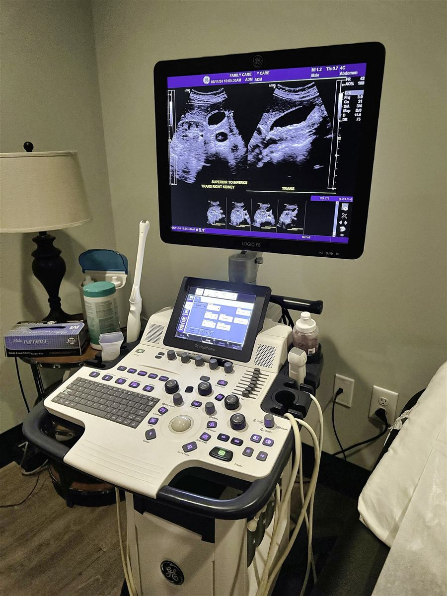
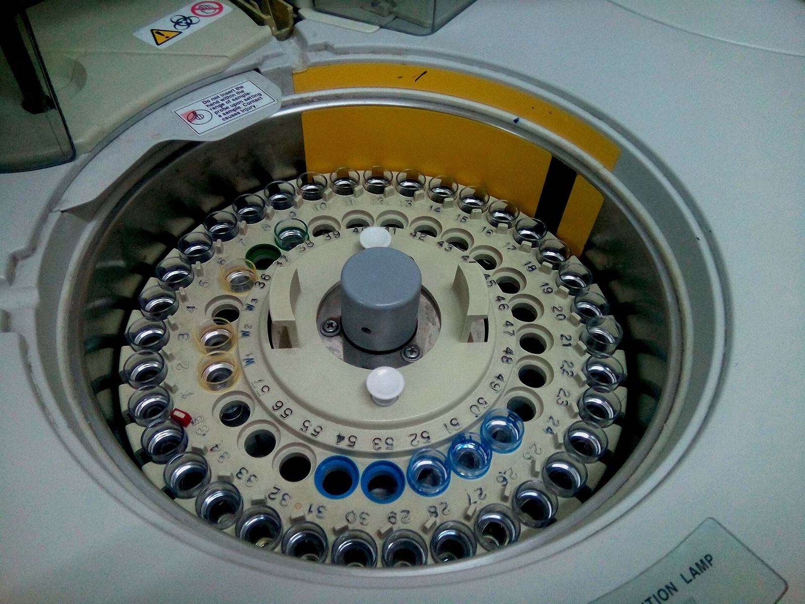
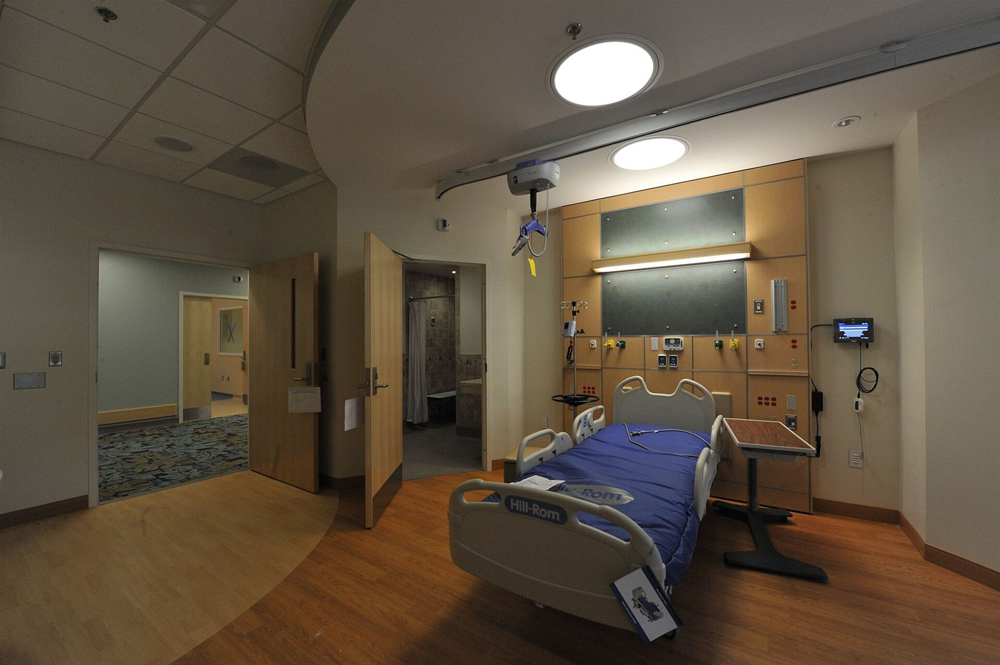
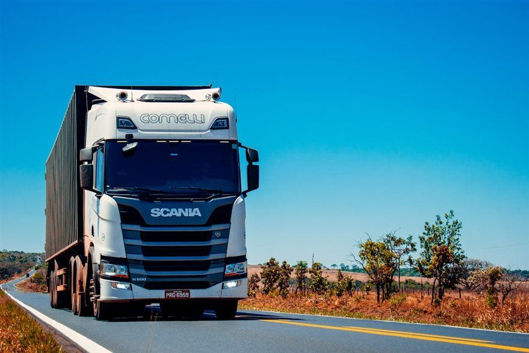
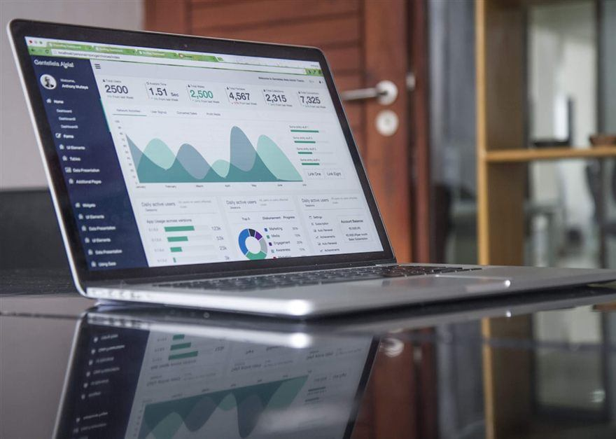

{{ t.heroKicker }}
{{ t.heroName }}
{{ t.heroRole }}
{{ t.heroLine }}
{{ f.k }}
{{ f.v }}
{{ t.aboutLabel }}
{{ t.aboutTitle }}
{{ p.text }}
{{ t.workLabel }}
{{ t.workQuote }}
{{ t.workText }}
{{ t.galLabel }}
{{ t.galTitle }}
{{ t.galSub }}





{{ t.philLabel }}
{{ t.philTitle }}
{{ t.philIntro }}
{{ t.whyLabel }}
{{ t.whyTitle }}
{{ t.skillsLabel }}
{{ t.skillsTitle }}
{{ g.t }}
{{ t.expLabel }}
{{ e.when }}
{{ e.role }}
{{ e.org }}
{{ e.d }}
{{ t.projLabel }}
{{ t.projTitle }}
{{ t.servLabel }}
{{ t.servTitle }}
{{ t.servSub }}
{{ s.t }}
{{ s.d }}
{{ a.n }}
{{ a.t }}
{{ a.d }}
{{ t.procLabel }}
{{ t.procTitle }}
{{ s.n }}
{{ s.t }}
{{ s.d }}
{{ t.impactLabel }}
{{ t.impactTitle }}
{{ t.impactText }}
{{ i.label }}
{{ t.faqLabel }}